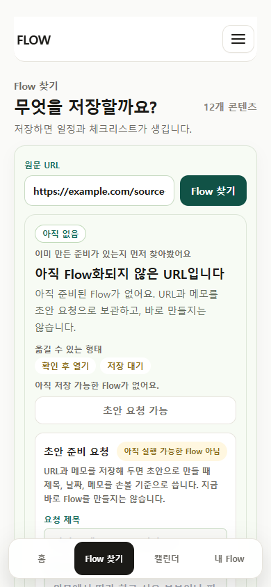
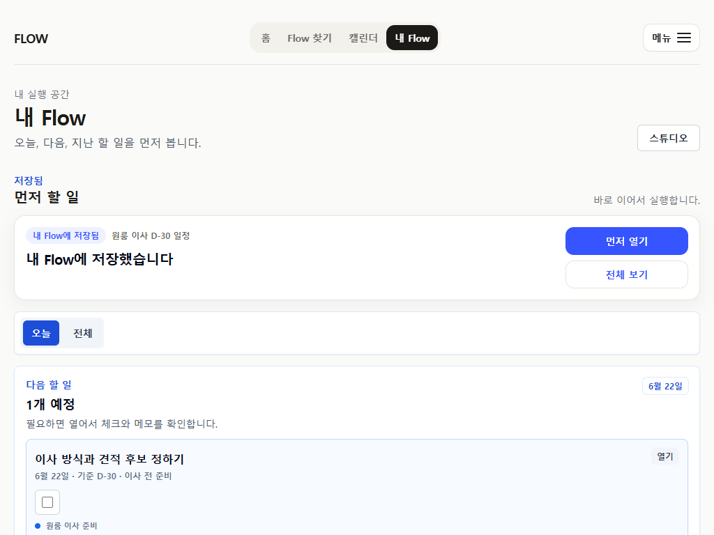
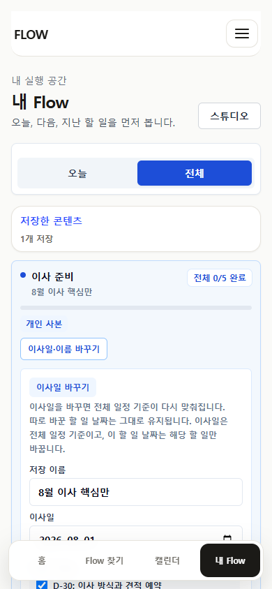
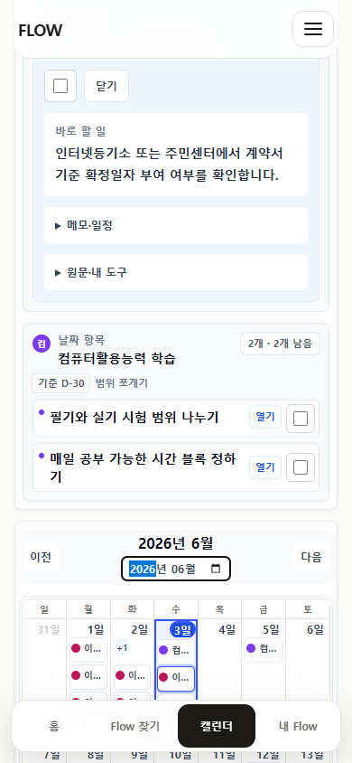

FlowMe P19 마감 · P20 백로그 (부엌도 손잡이도 맞췄다, 이제 닫힌 문 하나를 연다)
FLOWME · P19 마감 판단final review package · main · UI baseline 1943a9b · PNG 47장(모바일 390 + wide 1024) · 시나리오 8 + 프로토타입 게이트 · 생성 2026-07-10
P19는 손잡이를 다 맞췄다 — 완료는 어디서나 체크박스 1종, 캘린더 라벨은 안 잘리고, 진행 숫자는 맥락을 얻고, 홈 URL 입구·저장 후 수정入口까지 발견된다. P19-01~08 전부 닫힘. 이제 남은 건 폴리시가 아니다 — 핵심 흐름에서 아직 닫혀 있는 문 하나. 준비된 Flow가 없을 때 miss는 여전히 "메모 복사"로 끝나고, 초안은 앱 밖에서 만들어야 한다.
이번에도 UI polish 요청이 아니라 P20 제품/UX 백로그 산출 요청입니다. 결론부터: FlowMe는 개인 실행 도구가 맞고, P19는 백로그 8개를 전부 닫았습니다 — 완료 컨트롤 통일(checkbox 23 · button 0 · mixed 0), 진행 숫자 맥락화(ambiguous 0 · contextual 23 · row-level Flow chip 0), 캘린더 모바일 밀도(dense row 0)·wide 헤더 중복(heading duplicate 0), 공개 /f 저장 전 preview(completion-like 0 · preview 89), 홈 URL/메모 입구(/flows · above fold), 저장 후 수정入口(anchor·item edit visible), miss 정직 gate(implies live AI false). P18이 방을 짓고, P19가 손잡이를 맞췄습니다 — 화면들이 이제 "하나의 도구"로 읽힙니다. 그래서 P20의 축은 또 다른 마감이 아니라, 핵심 흐름에서 유일하게 아직 막힌 지점입니다: URL/메모로 들어왔는데 준비된 Flow가 없을 때, 지금은 "초안 요청 정리본"을 복사해 앱 밖으로 나가야 합니다. 그 초안을 앱 안에서 만들어 손보고 내 Flow로 잇는 첫 slice — 그리고 초안이 도착할 내 Flow 수정 모델 — 이 P20의 등뼈입니다. Calendar·public export·Studio는 이미 충분하거나 이 slice의 결과로만 움직입니다.
이번 검토 근거
Vercel 실행 화면은 보지 않았습니다. GitHub main의 P19 final review package(README·audit.md·route-evidence.json·screenshots 47장, UI baseline 1943a9b), P19 번호 정합성 감사·P19-08 AI draft gate 감사, 그리고 4개 E2E 스펙(flow-mvp·url-first-user-surface·public-share-cta-order·workbench-source-density)만 근거로 판단했습니다. 핵심 시나리오 프레임 — 홈(01·32)·URL-first hit/miss/candidate(27·29·30)·저장 후 내 Flow(16·36)·개인 overlay(13b·13c)·캘린더 다중 Flow(43·44)·공개 /f(06·워크벤치 25)·스튜디오(39) — 을 픽셀로 대조하고, E2E가 실제로 잠근 기준선(완료=체크박스, 저장 전=preview, export=Flow 단위 1개, miss=비-live-AI)을 코드로 재확인했습니다. 판정 기준 3가지: ①P19 8개가 evidence로 실제 닫혔는가 ②핵심 흐름 5단계 중 아직 막힌 지점은 어디인가 ③사용자가 물은 "무엇을 먼저"(AI draft·수정 모델·Calendar·public export·Studio)에 제품 흐름 기준으로 답할 수 있는가. 사용자 화면 금칙어(P0·대기열·파이프라인·Canonical URL·handoff·source-backed·Step·Item·Markdown) 재노출 제안은 넣지 않았고, 4탭 IA·/flow-lab=internal-console·/restart=release-preview·/u/*=creator-profile 분리는 전제로 유지합니다.
SECTION 1
P19 마감 총평 — 손잡이는 맞았다, 이제 문을 연다
P19는 8개를 전부 닫았다 (evidence 확인)
P18이 남긴 "손잡이가 화면마다 다르다"가 실제로 통일됐다 — 완료=행 왼쪽 체크박스 1종(checkbox 23·button 0·mixed 0, 16·43·44), 진행 숫자 맥락화(ambiguous 0·contextual 23·row-level Flow chip 0), 캘린더 모바일 밀도·wide 헤더 중복 해소(dense row 0·heading duplicate 0), 공개 /f 저장 전 preview 톤(completion-like 0·preview 89), 홈 URL/메모 입구(/flows·above fold), 저장 후 수정入口("이사일·이름 바꾸기"·"제목·날짜·메모 수정"). E2E가 이 선들을 코드로 잠갔다.
그런데 핵심 흐름에 아직 닫힌 문이 하나 있다
핵심 흐름 2단계는 "준비된 Flow를 찾거나, 없으면 초안 요청으로 보관"이다. 앞 절반(hit→저장→실행→캘린더)은 이제 매끄럽지만, miss의 종착이 "메모 복사"다 — miss는 초안 요청 저장 후 "# 초안 요청 정리본"을 클립보드로 복사해 주고, 카드는 "초안이 준비되면…"이라 말하지만 그 초안을 앱 안에서 만들어 손보는 경로가 없다(29·30, E2E 확인). 나중에 기존 Flow와 매칭되는 가지("이미 Flow로 준비됨")는 작동하지만, 끝내 매칭 안 되는 URL/메모는 아무 실행물도 못 얻는다.
중심축(재확인)
개인 실행 도구로 확정 유지. "URL/메모 → 실행 Flow → 내 Flow/캘린더/export"의 앞 절반과 실행 종착지가 모두 작동하고 일관된다(01·27·16·43). 방향을 바꿀 이유가 없다 — P20은 방향이 아니라 유일하게 빈 칸(초안 생성)을 채우는 백로그.
P20의 성격
P18=방을 짓기, P19=손잡이 맞추기. P20=닫힌 문 하나를 열기 — miss를 "보관"에서 "초안을 만들어 손보고 내 Flow로 잇기"로. 이건 폴리시가 아니라 핵심 흐름 완성이고, 필요한 그릇(13c 편집 overlay·스튜디오 초안 탭)은 P18·P19가 이미 지어뒀다.
정직성은 지킨다
첫 slice는 "초안 = 사용자가 손보는 것"으로 열되, implies live AI false 기준선을 깨지 않는다 — 실제 LLM 자동생성은 별도 gate(P20-06)로 뒤에. 먼저 초안→편집→저장 배관을 정직하게 세우고, 생성은 그 위에 얹는다.
한 줄 판정 — FlowMe는 개인 실행 도구가 맞고, P19가 매일 쓰는 화면을 하나의 도구로 맞췄다. Blocking은 0. 이제 문제는 어긋난 손잡이가 아니라 핵심 흐름에서 딱 한 곳, "초안"이 앱 밖에 있다는 것이다. P20은 새 표면을 늘리지 말고 그 문을 연다 — 준비된 Flow가 없어도, 사용자가 앱 안에서 초안을 손봐 내 Flow로 잇는다.부엌도 손잡이도 맞췄다. 이제 닫힌 문을 열 차례다.
SECTION 2
시나리오별 UX/UI 문제 — 핵심 흐름 5단계 + 보조 3
핵심 흐름(①입력 → ②찾기/보관 → ③저장 후 실행 → ④캘린더 → ⑤공개 /f) 순서로, 각 시나리오에 P19가 닫은 것 · 남은 문제 · 사용자 영향 · screenshot/E2E 근거를 붙였습니다. 판정 chip: 양호 · 부분 문제 · 핵심 문제. 각 문제는 §3 백로그 ID로 연결됩니다.
32 · / @1024 — 같은 입구가 wide에서도 above fold · 추천과 경쟁 안 함
P19가 닫은 것 · P18에서 남았던 "홈에 URL 입력 입구가 약하다"가 해소됐다 — 홈 primary 아래에 "URL이나 메모로 Flow 찾기 · 링크 붙여넣기 · 요청 메모 · 준비된 Flow 확인" 입구가 모바일·wide 모두 above fold로 노출되고 /flows로 이어진다(homeUrlFirstEntryVisible true · destination /flows · aboveFold true · competesWithRecommendations false, 01·32). 새 lookup 구현을 늘리지 않고 발견성만 올린 게 맞다.
남은 문제 · 없음(방향/발견성 모두 충족). → 근거: 01·32, README home URL-first entry. P20에서 유지 기준선(부록 A).
시나리오 2 · 찾기(hit)
URL-first hit / custom-start — 찾아 가볍게 고쳐 시작
양호
27 · hit — "이미 만들어진 Flow가 있어요 · 이미 만든 준비가 있는지 먼저 찾아봤어요" + 학습 시작일 + export 3모드
양호 · hit은 "그대로 시작 / 조금 고쳐 시작" 토글 + 기준일(학습 시작일) + export 3모드로 정리돼 있고, E2E가 카피를 잠갔다 — "이미 만든 준비가 있는지 먼저 찾아봤어요"는 보이고 "AI 자동 생성 없이 먼저 찾아봤어요"·"Mathbang"·"Markdown"은 안 보인다. export 모드를 calendar/markdown/checklist로 돌려도 항상 "메모 문서 받기"로 뜨고 "Markdown"이 새지 않는다(url-first-user-surface.spec).
판단 · 저장 전은 Step 포함/제외 + 기준일까지 가볍게, 개별 항목의 날짜·문구는 저장 후로 — 이 분업이 유지된다. hit 시나리오는 P20에서 손대지 않는다. → 근거: 27, url-first-user-surface.spec. 유지 기준선.
시나리오 3 · 보관(miss)
URL-first miss / candidate — 준비된 Flow가 없을 때 무엇이 남는가
핵심 문제 · P20 1순위

29 · miss — "아직 Flow화되지 않은 URL입니다 · 지금 바로 Flow를 만들지는 않습니다" + 초안 요청 저장30 · candidate — "요청 내용 보기" · "초안 요청 정리본 복사됨" (앱 밖으로 나가는 종착)
양호(정직성) · P19-08 닫힘 · miss는 "지금 바로 Flow를 만들지는 않습니다"로 정직하고, E2E가 /AI가|자동 생성|바로 생성|생성 중/ 노출을 금지로 잠갔다(implies live AI false). 나중에 기존 Flow와 매칭되면 카드가 "이미 Flow로 준비됨 · Flow 결과로 이동해 바로 시작할 수 있어요"로 승격된다 — 이 매칭되는 가지는 이미 작동한다(30, url-first-user-surface.spec).
핵심 문제 — 끝내 매칭 안 되는 URL/메모는 실행물이 0이다 · miss의 종착이 "메모 복사"다. 초안 요청 저장 → "초안 요청 정리본 복사됨" → 클립보드에 "# 초안 요청 정리본" 텍스트가 담긴다(E2E 확인). 카드는 "초안이 준비되면 제목, 날짜, 메모를 손본 뒤 내 Flow와 캘린더로 이어갈 수 있어요"라고 약속하지만 — 그 초안을 앱 안에서 만드는 경로가 없다. 사용자는 정리본을 들고 앱 밖(다른 도구)으로 나가 초안을 만들어야 한다.
사용자 영향 · 제품 가설의 절반("URL/메모 → 실행")이 miss에서만 끊긴다. "찾으면 훌륭, 없으면 복사 후 이탈" — 준비된 콘텐츠 밖의 URL을 가진 사용자는 FlowMe를 "카탈로그"로만 경험하고, 자기 URL이 실행물이 되는 경험을 못 한다. 이게 P20이 열어야 할 유일한 문. → 근거: 29·30, url-first-user-surface.spec(정리본 복사 흐름). §3 P20-01, 결정 §4-1.
시나리오 4 · 저장 후 실행
저장 후 내 Flow 오늘 — 완료가 어디서나 같은 모양인가
양호 · P19-02/03 닫힘
16 · 오늘 @390 — "오늘 2개 남음" 단일 프레임 · 완료=행 왼쪽 체크박스 · Flow 진행 분수는 행에서 빠짐

36 · /my?savedMap=moving-d30 @1024 — "내 Flow에 저장됨" 확인 + 완료=체크박스 · 1개 예정
양호 · P18 문제가 통일됐다 · 오늘이 단일 프레임·단일 카운트(frame 1·count source 1)로 정리되고, P18에서 버튼/체크박스로 갈리던 완료가 행 왼쪽 체크박스 1종으로 수렴했다(taskCompleteCheckboxCount 23·buttonCount 0·mixedControlCount 0, 16·36). 오늘 카드에 붙던 Flow 전체 분수("0/9")도 빠져, 진행 숫자가 맥락 라벨만 남았다(progress ambiguous 0·contextual 23·row-level Flow chip 0). 저장 직후 "내 Flow에 저장됨" 확인이 첫 할 일 제목을 반복하지 않는다.
남은 문제 · 실행 자체는 양호. 단 완료 "후" 상태(취소선·잔여 감소)는 캡처가 없어 검증 공백으로 남는다(§5-5). → 근거: 16·36, README task complete·progress. 유지 기준선.
시나리오 5 · 수정 모델
저장 후 기준일·항목 수정 — 발견되지만, wide에서 한 입구가 사라진다
부분 문제 · 초안이 도착할 곳

13b · 개인 사본 → "이사일·이름 바꾸기" · "바꾸면 전체 일정 다시 맞춰짐 · 따로 바꾼 날짜는 유지" (기준일 수정入口)13c · 항목 상세 — "제목·날짜·메모 수정" · "이 할 일 날짜" override + 시간/장소/반복/메모 (초안 편집 overlay)
양호 · P19-07 닫힘 · 저장 후 수정入口가 발견 가능해졌다 — Flow 전체는 "이사일·이름 바꾸기"(myFlowAnchorEditEntryVisible true, accessible name "이사 준비 이사일·이름 바꾸기"), 개별 항목은 "제목·날짜·메모 수정"(myFlowItemEditEntryVisible true), "이 할 일 날짜" override까지(13b·13c). 기준일 vs 개별 항목 날짜 구분 카피("바꾸면 전체 다시 맞춰짐 / 따로 바꾼 날짜는 유지")가 URL-first(27)와 동일 문장으로 일관된다.
문제 ① wide에서 기준일 입구가 사라진다 · evidence의 Edit entry visible by viewport가 {"390":{anchor:2,item:1}, "1024":{anchor:0,item:1}}다 — 모바일에선 "이사일·이름 바꾸기" 입구가 2개 보이는데 wide(1024)에선 anchor 입구가 0이다. 즉 큰 화면 사용자는 "이사일 바꾸기"에 도달하지 못한다. P19-07이 모바일만 닫고 wide를 흘렸다.
문제 ② 초안이 도착할 곳인데, 초안 상태를 아직 안 받는다 · 이 13c overlay는 P20-01 초안이 착지해 편집될 바로 그 화면이다. 하지만 지금은 source-backed 개인 사본만 편집 대상이고, "초안 상태(draft)" Flow를 여기서 열어 채우는 경로가 없다. 초안을 열려면 이 overlay가 draft 원본도 받아야 한다.
문제 ③ 기준일↔항목 충돌·되돌리기 미검증 · "따로 바꾼 날짜는 유지"(13b)는 카피로만 있고, 기준일 변경이 개별 override와 부딪칠 때의 실제 동작·되돌리기 UI가 캡처에 없다(§5-3).
사용자 영향 · 수정 모델은 정직하고 정확하지만, wide 사용자는 기준일을 못 고치고, 초안은 아직 이 방에 들어오지 못한다. → 근거: 13b·13c, README Edit entry visible by viewport {1024 anchor:0}. §3 P20-02, 결정 §4-2.
시나리오 6 · 캘린더
Calendar 같은 날짜 다중 Flow — 밀도·헤더는 닫혔고, 그리드 라벨만 잔여
양호 · 잔여 폴리시 Low

43 · @390 — agenda 저밀도(dense row 0), 완료=체크박스. 단 그리드 라벨은 아직 "컴퓨터활용능력…" 잘림 + "이사 준비"×2
양호 · P19-01/03/04 닫힘 · 모바일 agenda 밀도(dense row 0 · row date/timing/Flow/progress meta 0 · open-label 4), wide 헤더 중복(calendarHeadingDuplicateCount 0), Flow 구별(same-date distinct Flow 2 · agenda grouped by Flow true), 완료 체크박스(taskCompleteButtonCount 0) 모두 닫혔다. 날짜 화면에서 Flow 완료 분수도 빠졌다(row-level Flow progress chip 0). 캘린더는 이제 날짜 우선 실행 화면으로 읽힌다.
남은 문제(Low, 폴리시) · 월 그리드 셀 라벨은 여전히 긴 Flow명을 "컴퓨터활용능력…"으로 자르고, 같은 Flow가 "이사 준비" 라벨 2개로 그리드에 뜬다(selectedDateGridFlowLabels: ["컴퓨터활용능력...","이사 준비","이사 준비"], 43). agenda는 그룹으로 정리됐지만 그리드 셀 레벨의 이름 잘림·같은 Flow 중복은 distinct-group 지표(2)가 잡지 못한 사각지대로 남는다.
사용자 영향 · 실사용엔 지장 적음(agenda가 정리돼 있어). 다만 3~5 Flow로 늘면 그리드가 다시 붐빌 수 있다(§5-6). → 근거: 43·44, README selectedDateGridFlowLabels. §3 P20-05, 결정 §4-3.
시나리오 7 · 공개 /f
공개 /f — Flow 단위 저장·내보내기, 저장 전 preview는 정직하다
양호 · P19-05 닫힘 · post-save 미검증
06 · /f/vehicle — 셋업 + sticky "내 Flow에 저장"(Flow 단위 primary), 내보내기는 Flow 단위 secondary 1개25 · 워크벤치 상세 — 저장 전 항목 체크가 preview/선택(completion-like 0), 완료로 안 읽힘
양호 · P19-05 닫힘, E2E가 잠금 · sticky primary가 "내 Flow에 저장/내 Flow에서 보기"로 고정(도구/파일/받기/복사/시트/캘린더 라벨 금지), 내보내기는 Flow 단위 secondary 1개 + 포맷 옵션 ≥2 + 항목 단위 export-like 라벨 0, 저장 전 항목 체크는 완료가 아니라 preview/선택(preSaveCheckboxCompletionLikeLabelCount 0, 89개 전부 preview 라벨)로 잠겼다(public-share-cta-order.spec). 워크벤치 반복 행에서 source 링크도 빠지고 공통 노트 1개로 정리(workbench-source-density.spec).
남은 문제(Medium, 증거) · 저장 "후" 상태 — preview 체크가 저장 후 실제 완료 컨트롤로 활성화되는 화면이 캡처에 없다(§5-4). "Flow 단위 export 보강"은 새 항목 단위 모델을 만드는 게 아니라, 이 저장 전↔후 경계를 evidence로 닫는 것이 맞다(결정 §4-4). → 근거: 06·25, public-share-cta-order.spec. §3 P20-04.
양호(그리고 그게 핵심) · creator-profile는 잘 분리된 보조 표면이다 — 현재 사용자 스튜디오는 noindex, 공개 채널만 indexable, /my·/calendar 헤더의 보조 버튼으로만 진입(studioEntryDestinationTier creator-profile · unexpectedRoute 0), E2E가 /flow-lab·수동등록 QA가 정상 nav에 0임을 잠갔다.
판단 · 보조 유지 — 5번째 탭 승격·publishing 확대 아님. 이건 daily loop가 아니라 supply다. 다만 스튜디오에 이미 "초안" 탭이 있다(draftContentCardCount 2, 39) — 이건 P20-01 초안이 저장 전 머무를 선반(shelf)이 이미 마련됐다는 뜻이다. Studio는 "키우는" 게 아니라 초안 흐름의 보관함으로 재사용한다. → 근거: 39, README creatorProfile draft 2 · studio entry policy. §3 P20-03, 결정 §4-5.
/restart/moving-d30와 /flow-lab/url-first-p0는 4탭 밖에 유지된다. E2E가 3개 뷰포트(390/768/1024)에서 사용자 nav에 /flow-lab 링크 0·수동등록 QA 링크 0, flow-lab은 "내부 실험 콘솔 · 정상 사용자 메뉴에 연결하지 않는" 컨텍스트 + noindex, restart는 영어 요일/동사/월-시간·혼합 export 언어 hit 0으로 잠갔다(url-first-user-surface.spec). 이번에도 통과 — P20에서 손대지 않는다(부록 A).
SECTION 3
P20 Priority Backlog — Blocking / High / Medium / Low
Blocking · 0건
정상 4탭·URL-first·wide 버킷·nav-leak·티어 분리·miss 정직성 모두 hit 0, P19-01~08 닫힘. 출시/방향을 막는 항목 없음. P20은 "빈 칸을 채우고 문을 여는" 제품 작업.
High · 2건
P20-01 URL-first 초안 첫 slice(miss→편집 가능한 초안→내 Flow) · P20-02 내 Flow 수정 모델 강화(초안 착지 + wide 기준일 입구 + 충돌/되돌리기).
Medium · 2건
P20-03 스튜디오 "초안" 탭을 초안 선반으로 연결 · P20-04 공개 /f 저장 전↔후 경계 evidence + Flow 단위 유지.
Low · 2건
P20-05 캘린더 그리드 라벨 잔여 폴리시(잘림·같은 Flow 중복·3~5 Flow) · P20-06 실제 AI 생성 slice(spec·gate, 뒤로).
각 항목은 바로 개발 가능한 목표로 썼고, 왜 지금(또는 나중에) 해야 하는지와 건드리면 안 되는 기준선을 붙였습니다. P20-01은 새 기능이지만 그릇(13c overlay·스튜디오 초안 탭)은 이미 있으므로, 4탭 IA·공유 shell·저장/실행/내보내기 스키마·티어 분리·implies live AI false를 안 건드리고 비어 있는 흐름 하나만 잇습니다.
P20-01 · High · url-first/my-flow
URL-first 초안 첫 slice — miss를 "편집 가능한 초안 → 내 Flow"로 잇는다
Route · /flows miss/candidate(29·30) → /my 초안 편집 overlay(13c) → 저장
Problem · 준비된 Flow가 없을 때 miss의 종착이 "초안 요청 정리본 복사"다(30). 카드는 "초안이 준비되면 손본 뒤 내 Flow로 이어갈 수 있어요"라 약속하지만, 그 초안을 앱 안에서 만드는 경로가 없다 — 사용자는 정리본을 들고 앱 밖으로 나간다.
Why now · 이건 폴리시가 아니라 핵심 흐름 2단계의 빈 칸이다. 앞 절반(hit→저장→실행→캘린더)이 P18·P19로 매끄러워진 지금, 유일하게 막힌 문이 여기다. 그릇(13c 편집 overlay·스튜디오 초안 탭)도 이미 있어 새 표면 없이 흐름만 잇는다.
Expected(정직한 첫 slice) · miss/candidate에 "초안으로 시작" 액션을 추가 → 사용자의 URL·메모 + 선택한 골격(날짜 앵커·항목 틀)을 draft 상태 Flow로 승격 → 그 초안이 13c overlay에서 열려 제목·날짜·메모·항목을 사용자가 손봄 → "내 Flow에 저장"으로 실행 Flow가 됨(그때부터 캘린더/오늘/export에 반영). 첫 slice의 초안 내용은 결정론적 골격(사용자 입력 + 템플릿)으로 채우고, 실제 LLM 자동생성은 P20-06으로 분리 — 이렇게 하면 배관을 먼저 검증하고 implies live AI false를 안 깬다.
Implementation · miss 저장 시 supply-candidate에 status: draft로 승격 옵션 → 스튜디오 초안 탭/candidate 카드에서 "초안 편집" → 기존 13c overlay를 draft 원본으로 재사용(P20-02 선행) → 저장 시 개인 사본 스키마로 전환.
건드리면 안 되는 기준선 · implies live AI false(초안은 "제안", 자동 실행/생성 과장 금지) · miss 정직 카피("지금 바로 만들지 않습니다") · candidate 사용자어(internal hit 0) · 저장/실행/export 스키마 · "메모 문서"(Markdown 금지). Done when · miss에서 초안을 만들어 13c에서 편집 후 내 Flow로 저장하는 경로가 닫힘 · 사용자어 hit 0 · live-AI 카피 0 · overflow 0.
Problem · ① wide(1024)에서 기준일 입구가 사라진다(Edit entry visible by viewport {"1024":{anchor:0}}) — 큰 화면 사용자는 "이사일 바꾸기"에 도달 못 함. ② 13c overlay가 source-backed 사본만 편집 대상이라 draft 초안을 못 받는다(P20-01 선행 조건). ③ 기준일↔항목 override 충돌·되돌리기 동작이 미검증.
Why now · P20-01 초안이 착지·편집될 바로 그 방이다. 초안이 도착하기 전에 이 방이 (a) 초안 원본을 받고 (b) 모든 뷰포트에서 기준일을 고칠 수 있어야 한다. P20-01과 한 묶음이다.
Evidence · README Edit entry visible by viewport {"390":{anchor:2,item:1},"1024":{anchor:0,item:1}} · 13b 기준일 카피 "따로 바꾼 날짜는 유지"는 있으나 충돌 캡처 없음(§5-3).
Expected · "이사일·이름 바꾸기" 입구를 wide에서도 Flow 헤더에 노출(anchor ≥1 at 1024) → 13c overlay가 draft 원본도 편집 대상으로 수용 → 기준일 변경 시 개별 override 유지 규칙을 실제 동작 + 되돌리기로 확정(카피와 동작 일치).
Implementation · anchor edit entry의 wide 브레이크포인트 렌더 복구 → overlay 편집 대상에 draft kind 추가 → anchor 재계산 시 override 항목 skip + undo 스택.
건드리면 안 되는 기준선 · 기준일=전체 일정 / 항목 날짜=개별 구분 카피(13b, URL-first 27과 동일 문장) 유지 · 저장 후 편집 모델 유지(저장 전으로 당기지 않음) · 완료=체크박스 1종 · 개인 사본 overlay 스키마. Done when · anchor edit entry visible ≥1 at 1024 · overlay가 draft 편집 지원 · 기준일↔override 충돌/되돌리기 캡처로 확인.
Problem · 스튜디오에 이미 "초안" 탭이 있고 draft 카드도 있지만(draftContentCardCount 2), URL-first 초안 흐름(P20-01)과 연결되어 있지 않다. 초안이 어디에 쌓이고 어디서 다시 열리는지가 흩어져 있다.
Why now · P20-01의 초안이 저장 전 머무를 보관함이 필요하다. 새 표면을 만들 필요 없이 기존 초안 탭을 그 선반으로 지정하면 된다 — Studio를 키우는 게 아니라 흐름에 편입.
Expected · URL-first에서 만든 draft가 스튜디오 초안 탭에 모이고, 카드에서 "초안 편집"(13c) → "내 Flow에 저장"으로 이어짐 → 초안/게시/복사본이 한 곳에서 구분됨. 5번째 탭 승격·publishing/monetization 확대는 하지 않는다.
Implementation · draft status Flow를 스튜디오 초안 탭 쿼리에 포함 → 카드 액션을 P20-01 편집 진입과 공유 → noindex·보조 진입 정책 유지.
건드리면 안 되는 기준선 · creator-profile 보조 표면·noindex(현재 사용자 스튜디오) · 4탭 밖 유지 · studioEntryUnexpectedRouteCount 0 · 사용자 화면 금칙어 재노출 금지. Done when · URL-first draft가 스튜디오 초안 탭에 나타나 편집→저장으로 이어짐 · 스튜디오는 여전히 보조 진입.
P20-04 · Medium · public /f
공개 /f 저장 전↔후 경계 확정 — Flow 단위 유지, 항목 단위 신설 금지
Route · /f/[slug] 워크벤치 저장 전(25) → 저장 후 /my
Problem · 저장 전 preview는 정직하게 닫혔지만(completion-like 0), 저장 "후" 그 preview 체크가 실제 완료 컨트롤로 바뀌는 화면이 캡처에 없다. "Flow 단위 export/save 보강" 요청의 실제 답은 새 항목 단위 모델이 아니라 이 저장 전↔후 전환을 evidence로 닫는 것.
Why now · 공유 진입은 신규 유입의 첫 저장 화면이라 전환 경계가 명확해야 한다. P20-01 저장 후 착지와 같은 "저장 후" 화면이라 함께 검증하면 값이 크다.
Evidence · public-share-cta-order.spec: export=Flow 단위 secondary 1개·포맷 ≥2·항목 export-like 0, preview 체크 89개 전부 preview 라벨. 저장 후 상태는 미캡처(§5-4).
Expected · 저장 후 화면에서 preview 체크가 실제 완료 체크박스(P19-02 형태)로 활성화됨을 캡처·E2E로 확정 → 저장/내보내기 단위는 Flow 하나로 유지(항목 단위 개별 저장/내보내기 신설 금지) → 내보내기는 Flow 단위 secondary 그대로.
Implementation · 저장 후 /my 착지에서 해당 Flow 완료 컨트롤 활성 캡처 추가 → preview→completion 전환 E2E 1건 → 기존 Flow 단위 export 유지.
건드리면 안 되는 기준선 · 공유 shell · 저장/셋업 primary(sticky save/setup 9 · before-primary 0) · "콘텐츠 더 보기" 2차 · export Flow 단위 1개(itemLevelExportLike 0) · "메모 문서"(Markdown 금지) · 저장 전 preview 정직성. Done when · 저장 후 완료 컨트롤 활성이 캡처/E2E로 확인 · 항목 단위 신설 0 · Flow 단위 유지.
P20-05 · Low · calendar(폴리시)
캘린더 월 그리드 셀 라벨 잔여 — 잘림·같은 Flow 중복·3~5 Flow
Route · /calendar 월 그리드 셀(43)
Problem · agenda 밀도·헤더 중복은 닫혔지만(P19-01/04), 월 그리드 셀 라벨은 여전히 긴 Flow명을 "컴퓨터활용능력…"으로 자르고 같은 Flow를 "이사 준비" 라벨 2개로 표시한다(selectedDateGridFlowLabels: ["컴퓨터활용능력...","이사 준비","이사 준비"]). distinct-group 지표(2)가 잡지 못한 그리드 레벨 사각지대.
Why now = 낮음 · agenda가 정리돼 있어 실사용 지장이 작다. 핵심 흐름(P20-01/02)이 우선이고, 이건 그 뒤 폴리시. 다만 3~5 Flow로 늘면 재발할 수 있어 fixture 확장과 함께 잡는 게 효율적.
Expected · 그리드 셀을 Flow당 점 1개 + "+N"로 축약(같은 Flow 중복 라벨 제거) → 잘리는 이름 대신 안정적 초성/약칭 배지 → 3~5 Flow fixture로 색·대비 검증.
건드리면 안 되는 기준선 · same-date distinct Flow 2 · agenda grouped by Flow true · heading duplicate 0 유지 · 완료 체크박스 1종 · 색약 대비. Done when · 그리드 같은 Flow 중복 라벨 0 · 이름 잘림 0(배지 토큰) · 3~5 Flow 캡처.
P20-06 · Low · url-first/studio · spec·게이트
실제 AI 생성 slice — 지금은 spec만 (P20-01 배관 뒤에)
Route · /flows 초안 생성 · /u/* 초안 탭(P20-01 위)
Problem · P20-01은 초안을 결정론적 골격으로 채운다. 진짜 가치는 URL/메모에서 초안 항목을 자동 제안하는 것이지만, 지금 열면 정직성 기준선을 위협한다.
Why now = 아직 아니다 · 초안→편집→저장 배관(P20-01)과 착지 방(P20-02)이 먼저다. 그게 정직하게 서기 전에 LLM을 얹으면 "실시간 생성"으로 과장될 위험 + 편집/저장이 안 받쳐준 채 생성물만 쌓인다.
Expected(이번 산출물 = spec) · 생성 slice를 "AI가 초안 항목을 제안 → 사용자가 13c overlay에서 반드시 확인/수정 → 내 Flow 저장"으로 정의 → 생성물은 항상 "초안(제안)" 라벨, 자동 실행 없음, 저장 전 사용자 편집 필수 → 개방 조건: P20-01/02 완료 + 정직성 카피 재검증.
건드리면 안 되는 기준선 · implies live AI false는 생성이 실재하기 전까지 유지 · 저장 전 full editor 없이 시작(초안=편집 대상) · candidate 사용자어(internal hit 0) · Studio 보조 표면. Done when · 생성 slice·개방 조건·정직성 규칙이 문서화 · 사용자 표면 변화 0.
SECTION 4
무엇을 먼저 — 다섯 후보에 대한 판단
질문에 준 다섯 후보를 핵심 흐름 기준으로 순서 매깁니다. 결론: ①과 ②를 한 묶음으로 먼저(초안 배관 + 착지 방), 그다음 ③④(초안 선반·저장 후 경계), ⑤는 뒤로(폴리시), Studio 확장은 하지 않음(보조 유지).
1순위 (묶음)
URL-first AI draft 첫 slice + My Flow 수정/편집 모델 강화
둘은 같은 작업의 앞·뒤다. 초안(P20-01)이 착지·편집될 방이 13c overlay(P20-02)이고, 그 방은 지금 wide 기준일 입구가 없고 draft 원본을 못 받는다. 따로 하면 초안이 갈 곳이 없고, 방만 고치면 채울 게 없다. 핵심 흐름 2단계의 유일한 빈 칸이라 P20의 등뼈. → P20-01 + P20-02
2순위
public /f Flow 단위 export/save 보강
"보강"의 실제 답은 새 항목 단위 모델이 아니라 저장 전↔후 경계를 evidence로 닫는 것(P20-04). P20-01 "저장 후 착지"와 같은 화면이라 함께 하면 값이 크다. Flow 단위 export는 이미 정직하게 닫혀 있으니 유지가 우선.
3순위
Calendar 실행 화면 추가 단순화
P19-01/04로 이미 크게 단순화됐다. 남은 건 그리드 셀 라벨 폴리시(P20-05)로 실사용 지장이 작아 Low. 초안 흐름이 캘린더에 실행을 늘리므로, 3~5 Flow fixture와 함께 그 뒤에 잡는 게 순서상 맞다.
하지 않음
Studio/Creator 보조 표면 확장
확장하지 않는다. Studio는 daily loop가 아니라 supply이고, 지금 분리·noindex가 건강하다(39). 필요한 건 확장이 아니라 기존 "초안" 탭을 P20-01 초안의 보관함으로 재사용(P20-03). 5번째 탭 승격·publishing 확대는 흐름을 흐린다.
순서 한 줄 — ① 초안 배관 + 착지 방(P20-01·02)을 한 사이클에 → ② 저장 후 경계(P20-04) → ③ 초안 선반(P20-03) → ④ 캘린더 라벨 폴리시(P20-05) → ⑤ 실제 생성은 spec만(P20-06). My Flow 편집 모델은 별도 최우선이 아니라 ①의 절반이고, Studio는 키우지 않는다.
SECTION 5
evidence가 부족한 시나리오
아래는 제공된 산출물만으로는 판단할 수 없어 P20 evidence 패키지에서 함께 채워야 할 공백입니다. 정상 라우트 지표는 깨끗하지만, "상태 전환"과 "실패·경계" 캡처가 얇습니다.
1 · miss "미매칭" 종착
30은 매칭되어 승격된 candidate("이미 Flow로 준비됨")를 보여준다. 끝내 매칭 안 되는 URL/메모가 정리본 복사 뒤 무엇으로 남는지의 캡처가 없다 — P20-01이 여는 바로 그 지점.
2 · My Flow wide 기준일
{"1024":{anchor:0}}가 "wide엔 기준일 입구 없음"을 뜻하는지, 다른 곳으로 옮긴 것인지 @1024 anchor 편집 캡처가 없어 확정 불가(P20-02).
3 · 기준일↔항목 충돌
"따로 바꾼 날짜는 유지"(13b)의 실제 충돌 동작·되돌리기 캡처 없음. 카피만으로는 동작 확정 불가.
4 · 저장 후 완료 활성
공개 /f 저장 전 preview(25)는 있으나, 저장 후 그 체크가 완료 컨트롤로 바뀌는 화면이 없음(P20-04).
5 · "완료 후" 상태
체크박스 통일은 확인됐지만(16·43), 체크한 뒤 취소선·잔여 카운트 감소·"오늘 0개 남음" 상태 캡처가 없음.
6 · 캘린더 3~5 Flow
같은 날짜는 2 Flow까지만 캡처(43·44). 3~5로 늘 때 agenda 그룹·그리드 라벨이 견디는지 미검증(P20-05).
7 · 빈/에러/오프라인
내 Flow/캘린더 0개 상태, 저장 실패·잘못된 URL·네트워크 에러 등 비정상 경로 캡처가 전무.
8 · 접근성/키보드
체크박스·overlay·sticky CTA의 키보드 포커스·대비·스크린리더 라벨 근거 없음. 편집 모델이 커지는 P20에서 필요.
SECTION 6
P20 첫 번째 /goal 후보
추천 — P20-01 + P20-02를 한 사이클로: "miss에서 편집 가능한 초안을 만들어 내 Flow로 잇는다"
다섯 후보 중 핵심 흐름의 유일한 빈 칸이 여기다. hit→저장→실행→캘린더는 P18·P19로 매끄럽지만, 준비된 Flow가 없을 때 miss가 "메모 복사"로 끝나는 지점만 남았다. 초안(P20-01)이 착지할 방(13c overlay, P20-02)이 이미 있으니 새 표면 없이 흐름만 잇는다 — 그래서 첫 /goal로 실행 가능하고, 값이 가장 크다. 정직성(implies live AI false)은 결정론적 골격으로 초안을 채우고 실제 생성은 P20-06으로 미뤄 유지한다.
이 /goal이 닫으면 · 임의의 URL/메모를 가진 사용자가 앱을 떠나지 않고 초안을 손봐 실행 Flow로 만든다 → FlowMe가 "카탈로그"에서 "내 URL을 실행물로 바꾸는 도구"가 된다. 동시에 wide 기준일 입구·초안 착지·저장 후 상태 evidence 공백이 함께 닫힌다.
APPENDIX A
P20에서 건드리면 안 되는 기준선
P19가 닫은 선들. P20 작업은 이 밖에서만 움직입니다 — regression이 나면 P20 실패로 간주합니다.
완료 · 행 왼쪽 체크박스 1종(button 0·mixed 0). 진행 숫자는 항상 맥락 라벨(ambiguous 0), 행 레벨 Flow 분수 0.
miss 정직 · "지금 바로 Flow를 만들지 않습니다" 유지, implies live AI false. 초안은 "제안 · 사용자가 손보는 것"으로만.
공개 /f · 공유 shell · 저장/셋업 primary · 저장 전=preview(completion-like 0) · export Flow 단위 1개(item-level 0).
캘린더 · 날짜 우선 실행 · agenda Flow별 그룹 · 헤더 중복 0 · 모바일 저밀도.
수정 카피 · 기준일=전체 일정 재계산 / 항목 날짜=개별 유지 구분(13b, URL-first와 동일 문장). 편집은 저장 후 모델.
금칙어 · P0·대기열·파이프라인·Canonical URL·handoff·source-backed·Step·Item·Markdown 사용자 화면 재노출 0. export="메모 문서".
Studio · 보조 표면·noindex·보조 진입 유지. 5번째 탭 승격·publishing 확대 금지.
구조 · 스키마(저장/실행/export)·source-backed 원본 vs 개인 사본 경계 유지 · 1024px overflow 0 · 정상 라우트 guardrail 0.
APPENDIX B
복사용 /goal 초안 — P20 첫 사이클
아래를 그대로 붙이면 P20-01+02를 한 사이클로 착수합니다. 유지 기준선과 evidence 공백 보완을 포함합니다.
/goal
D:\flowme2605\flow-mvp 기준으로 진행해줘.
목표:
Claude Design P20 첫 사이클 — URL-first 초안을 실제 실행 흐름으로 잇는다.
/flows miss에서 준비된 Flow가 없을 때, 지금은 "초안 요청 정리본"을 복사해
앱 밖으로 나가야 한다. 이 문을 연다:
"miss/candidate에서 '초안으로 시작' -> 사용자의 URL·메모 + 골격을 draft로 승격
-> 기존 내 Flow 편집 overlay(제목·이사일/기준일·항목 날짜·메모·항목 포함/제외)에서
사용자가 확인·수정 -> '내 Flow에 저장'으로 실행 Flow가 됨 -> 캘린더/오늘/내보내기 반영".
범위(P20-01 + P20-02 한 묶음):
- 초안 내용은 이번 slice에서 결정론적 골격(사용자 입력 + 템플릿)으로 채운다.
실제 LLM 자동생성은 이번에 넣지 않는다(P20-06 spec으로 분리).
- 새 편집 화면을 만들지 않고 기존 13c overlay를 재사용하되,
(a) draft 원본도 편집 대상으로 받고
(b) wide(1024)에서도 "이사일·이름 바꾸기" 기준일 입구를 노출한다(현재 anchor:0).
- 기준일 변경 시 개별 항목 override 유지 규칙을 실제 동작 + 되돌리기로 확정한다.
유지 기준선(regression 금지):
- 4탭 IA / 공개 /f 공유 shell·저장 전 preview·export Flow 단위 1개
- 완료=행 왼쪽 체크박스 1종, 진행 숫자 맥락 라벨
- miss 정직: "지금 바로 만들지 않습니다", implies live AI = false
- 저장/실행/export 스키마, source-backed 원본 vs 개인 사본 경계
- 사용자 화면 금칙어(P0/대기열/파이프라인/Canonical/handoff/source-backed/Step/Item/Markdown) 재노출 0
- Studio 5번째 탭 승격 금지, 1024px overflow 0, 정상 라우트 guardrail 0
산출물(evidence 공백 보완 포함):
- P20 evidence package: miss "미매칭" 초안 생성 -> 편집 -> 저장 경로 캡처(390/768/1024)
- @1024 기준일 편집 입구 캡처, 기준일↔항목 override 충돌/되돌리기 캡처
- 완료 "후" 상태(취소선·잔여 감소), 공개 /f 저장 후 완료 활성 캡처
- markers: draftEditableBeforeSave, anchorEditVisibleAt1024, urlFirstMissDraftImpliesLiveAi:false
FlowMe P19 마감 판단 · P20 백로그 — GitHub main final review package(README·audit·route-evidence·screenshots 47) + 번호/AI-gate 감사 + E2E 4종(flow-mvp·url-first-user-surface·public-share-cta-order·workbench-source-density) 근거. Vercel 실행 미열람. 참조 screenshot은 p19-screenshots/로 복사됨.